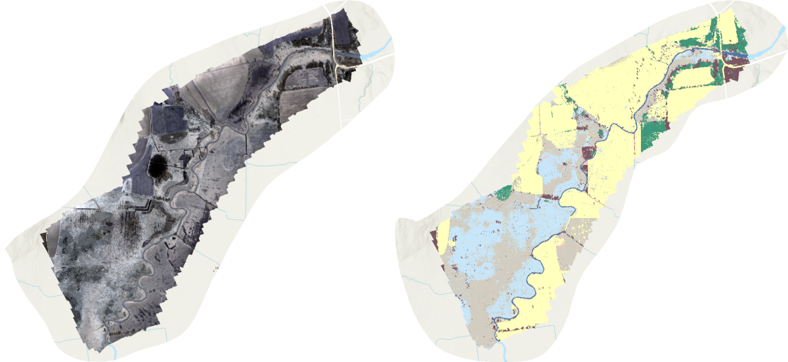

Introduction
The Lemon Fair Insect Control District is a municipal project of Bridport, Cornwall, and Weybridge seeking to control local mosquito populations. By applying larvicides in areas with high concentrations of mosquito eggs, the Lemon Fair Insect Control District reduces the presence of these pests and mitigates associated health risks. In this portfolio problem, we analyzed imagery of one section of the Lemon Fair River in order to assist the Lemon Fair Insect Control District with two tasks:
- Identifying areas that ought to be targeted for mosquito prevention
- Identifying the optimal source of imagery for this type of work
Image Acquisition & Comparison
In this portfolio problem, I comparatively analyzed 4 sources of imagery of the Lemon Fair River: aerial photos from Vermont’s Open Data Portal, satellite images taken by Planet Labs, drone footage taken in 2021, and drone footage taken in 2022.
I first downloaded images from VT Open Data Portal’s website. Using the Vermont Orthoimagery Finder, I found the most recent high resolution color imagery taken in April. On the main page, I selected the appropriate dataset and downloaded 6 adjacent images taken in April 2017, cross-referencing with the provided shapefile of the study area to ensure that the images covered the entire region.
Next, I downloaded imagery from Planet Labs. To do so, I navigated to Planet Explorer, specified my area of interest by uploading a shapefile of the study area, and specified the date range of April 2021 using the left sidebar. From the list of suitable images and image collections, I chose a single image that covered the entire study site. This eliminated any preprocessing work associated with stitching images together, and Planet Labs actually clipped the provided image to my study area.
The other two images were generated by flying drones directly over the study site. The drone image from 2021 was generated and provided by Bill Hegman using a borrowed drone. The drone image from 2022 was generated using the Geography Department’s drone during last week’s lab, when Bill Hegman took our class to the study site for a hands-on field trip. After lab, Bill stitched the many images taken by the drone into one image. I downloaded both drone images directly from our class Canvas page.
In order to efficiently compare the value of my four image sources, I generated the following table displaying important characteristics of each image.
| Source | Spatial Extent | Resolution | Year | Bands | Frequency of Imaging |
|---|---|---|---|---|---|
| VT Open Data Portal | Small, but merged images to cover entire study area. | 30 cm | 2017 | RGB + NIR | Once every 5 years, when VT commissions a plane. |
| Planet Labs | Large. Came from Planet Labs clipped to study area. | 3 m | 2021 | RGB + NIR | Daily (not always great quality) |
| Drone 2021 | Small. Does not cover study area. | 6 cm | 2021 | RGB + NIR + 8 more | As needed, with borrowed drone. |
| Drone 2022 | Even smaller. Does not cover study area. | 2.1 cm | 2022 | RGB | As needed, easy because we own the drone. |
My initial impression is that drones would work best for this work, because they offer the best spatial and spectral properties and if you own one, you can fly it whenever works best. While the aerial imagery from VT Open Data Portal has good technical specifications, they only photograph the region every 5 years. Flooded areas of standing water change from year to year depending on differing flood conditions, so aerial imagery would often fail to provide the most up-to-date information. While Planet Labs photographs the entire earth every day, their images are often covered by clouds and with a 3 meter pixel resolution, they might fail to pick up on small areas of standing water.
Let’s see how each image source performs in a classification model before deciding which one is best-suited for the Lemon Fair Insect Control District.
Pre-Processing & Analysis Performed
The first step of my analysis was to create a new map in ArcGIS Pro and import all of my images into the project. Next, I merged the six VT Open Data Portal images together into one image suitable for classification using the mosaic to raster tool. At this point, I was ready to perform my analysis. Because Mosquitoes tend to lay their eggs in standing and slow-moving water, I chose to identify locations of still water, which most often appeared in my images as irrigation channels, ponds, and the flooding of the Lemon Fair.
One at a time, I selected each image in ArcGIS Pro and navigated to the “classification wizard”. I configured my classifier as a supervised, object-oriented analysis and modified the default schema to include only the classes relevant to each image, which wound up being some combination of standing water, farmland, trees with leaves, flowing water, trees without leaves, shrubs, and wetlands. After using the default parameters to generate the segmented image, I identified 20 training samples for each class. I selected the Support Vector Machine as my classifier, using all segment attributes in my model. I saved my classified dataset as a new layer, and I chose not to merge or reclassify any regions so that I could fairly compare the performance of each image’s classification.
Results and Interpretation
Below, each classified layer is displayed next to its corresponding true color image, followed by a reflection on the strengths and/or weaknesses of that image source for classification. The legend next to the first set of maps applies to all classified figures.

As you can tell, the 2022 drone footage performed extremely poorly. Classification does not appear to be any better than random chance. Classification of regions is both blocky and pixelated, and no areas were correctly identified as standing water.

In stark contrast, the 2021 drone imagery performed remarkably well. Most ponds and irrigation channels were correctly classified as standing water. One aspect I found impressive was that flowing water was never erroneously classified as standing water; I, personally, would imagine that it would be difficult to distinguish between those two classes of water. That said, the model did make some errors. The L-shaped lake in the middle of the image was misclassified as flowing water, and some irrigation channels were misclassified as trees without leaves (although to be fair, there were trees without leaves along these irrigation channels). Overall, I am very impressed with the performance of this drone, especially juxtaposed with the drone from 2022.

The VT Open Data image performed better than the 2022 drone footage, but worse than the 2021 drone footage. Unfortunately, several agricultural fields and shrub areas were misclassified as standing water. Perhaps they were relatively wet areas and thus shared similar spectral characteristics. Additionally, several sections of road and several sections of the Lemon Fair River are misclassified as standing water, perhaps because of object shapes similar to standing water, and one pond was misclassified as flowing water. That said, many irrigation channels and ponds were correctly classified, and this classification would be salvageable were I to go in with the reclassification tool to correct mistakes.
Finally, despite its courser spatial resolution, the Planet Labs image performed better than the 2022 drone image. It correctly classified portions irrigation channels and some ponds, but failed to capture other parts. Additionally, one section of the forest in the southwest corner of the study region was misclassified as standing water, as well as parts of the flowing Lemon Fair River. While this image far outperformed the 2021 drone image, I believe that its 3m pixel resolution was inadequate to identify some narrow parts of irrigation channels.
Recommendations & Conclusion
Despite performing an identical analysis on each image, the performance of each image differed greatly, ranging from results that look basically random to results that are highly accurate. The clear winner in terms of classification accuracy is the 2021 drone footage, which correctly identifies almost all instances of standing water.
With a pixel resolution of mere centimeters and 12 multispectral bands, the 2021 drone simply has the best technical specifications for the job, allowing it to pick up on small objects that are essentially invisible at coarser resolutions. Drones also have the benefit of versatility: if you own a drone, then you can fly it whenever you want, which is far preferable to chartering a plane.
That said, drones are not without their drawbacks. First, operating a drone requires some degree of technical expertise. Second, it can take a long time, and many batteries, to photograph a study site. And third, the technical specifications vary widely between drones, allowing some drones to perform far better than others (as we saw with the 2022 drone footage). My recommendation to the Lemon Fair Insect Control District is to carefully evaluate their drone options and select one that minimizes these drawback and works best for them.